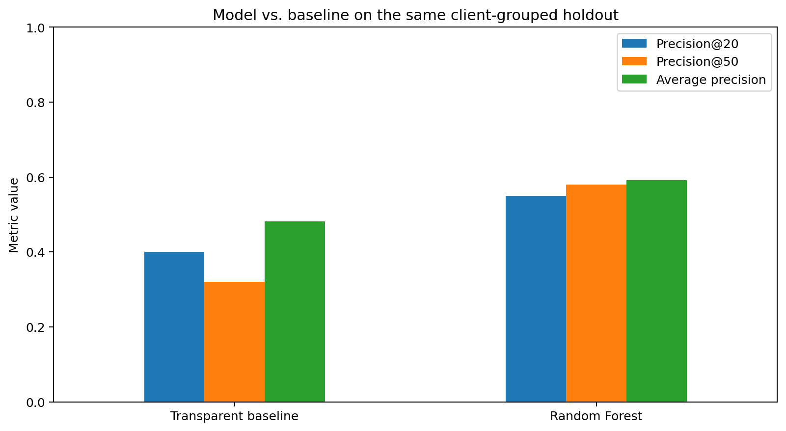
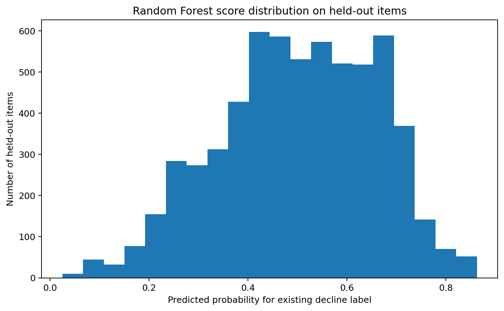

Which Content Pages Should Be Reviewed First?
A baseline and machine-learning approach to content refresh prioritization
Abstract
This study asks whether a machine-learning ranking can help prioritize content items associated with an existing decline label for human review. It uses the anonymized FlyRank ML Internship starter CSV and compares a transparent heuristic baseline with a Random Forest on the same client-grouped holdout. The evaluation reports Precision@20, Precision@50, average precision, and the held-out positive-label rate. In this run, the Random Forest achieved Precision@20 of 0.550 and Precision@50 of 0.580, compared with 0.400 and 0.320 for the baseline. The queue is decision-support for editorial review; it does not establish future traffic loss or prove that refreshing a page causes performance to improve.
1. Introduction / problem statement
Content teams have limited editorial time and need a practical way to decide which pages to inspect first. This study tests whether a model ranking based on content and search metadata improves top-of-queue identification of items associated with an existing decline label compared with a transparent rule-based baseline.
The output is a ranked review queue with reason codes. It is not an automatic publishing system and does not determine whether a page should be changed.
2. Data
The analysis uses the public anonymized starter CSV release, not the gated production warehouse. The raw file contained 30,000 rows and 44 columns; after requiring positive 90-day impressions, content age of at least 90 days, and one row per content ID, 30,000 rows remained. The eligible sample contains 32 client groups.
The target is the existing label trend_direction == 'down'. It is not a future label. Identifier columns are used only for deduplication and grouping. Client IDs, content IDs, trend-derived fields, private queries, and URLs are not included in the public ranked queue.
Metrics represent a trailing 90-day window as provided by the dataset. Because the target is an existing trend label and its time construction may overlap these metrics, results are interpreted as retrospective associations rather than clean future forecasts.
3. Methodology
The baseline score combines visibility (40%), freshness risk (30%), position opportunity (25%), and relative content-depth gap (5%). These components create an interpretable prioritization heuristic without training on the target.
The Random Forest uses available numeric and categorical metadata. Numeric missing values are median-imputed with missingness indicators; categorical values are most-frequent-imputed and one-hot encoded. The model uses 200 trees, maximum depth 10, minimum leaf size 25, balanced subsampling, and random seed 42.
Validation uses one 80/20 client-grouped holdout. No client group appears in both training and test sets. Both the baseline and model are evaluated on the same held-out items. The features exclude content_id, client_id, trend_direction, trend_pct, and target-derived labels.
4. Results
The held-out test set contains 6,163 items, with a positive-label rate of 0.511. Precision@K measures the share of positive labels in the top K ranked items. Average precision summarizes the precision-recall ranking curve.
| Ranking | Test rows | Positive rate | Precision@20 | Precision@50 | Average precision |
|---|---|---|---|---|---|
| Transparent baseline | 6163 | 0.511 | 0.400 | 0.320 | 0.482 |
| Random Forest | 6163 | 0.511 | 0.550 | 0.580 | 0.591 |


These values measure agreement with the available label. They do not measure the causal effect of refreshing content, nor do they establish future performance.
5. Limitations and honest framing
- The target is an existing trend label, not a future outcome.
- Trailing-window metrics may overlap the period used to derive the label.
- A single client-grouped holdout is one estimate and may vary with the split.
- The starter sample may not represent other clients, periods, or the gated production warehouse.
- Reason codes are screening prompts, not causal explanations.
- Missingness, tracking changes, seasonality, and content-type differences can affect the interpretation.
- No experiment here establishes that updating a page will increase traffic.
6. Ranked recommendations
The queue is sorted by Random Forest score on the held-out items. Item IDs below are synthetic display IDs; original identifiers are not published. A person must inspect each page and verify search intent, factual accuracy, seasonality, tracking quality, and business context before acting.
| Rank | Item | Model score | Reason codes | Suggested human review |
|---|---|---|---|---|
| 1 | item_001 | 0.863 | general_refresh_review | Manual content and data review |
| 2 | item_002 | 0.857 | general_refresh_review | Manual content and data review |
| 3 | item_003 | 0.856 | general_refresh_review | Manual content and data review |
| 4 | item_004 | 0.852 | general_refresh_review | Manual content and data review |
| 5 | item_005 | 0.851 | general_refresh_review | Manual content and data review |
| 6 | item_006 | 0.851 | page_one_decay_risk | Review accuracy, intent match, and SERP changes |
| 7 | item_007 | 0.850 | low_ctr_visible_page | Review title/snippet and search intent |
| 8 | item_008 | 0.849 | general_refresh_review | Manual content and data review |
| 9 | item_009 | 0.849 | general_refresh_review | Manual content and data review |
| 10 | item_010 | 0.849 | general_refresh_review | Manual content and data review |
The complete public-safe queue is available as a CSV export in the repository. No recommendation should trigger automatic publishing, deletion, redirects, or changes to sensitive claims.
7. Reproducibility
Run the capstone notebook top-to-bottom in an environment with pandas, NumPy, scikit-learn, and Matplotlib. The notebook writes measured metrics, figures, and the ranked review queue. Re-running with the same dataset and random seed should reproduce the split and model configuration, subject to library and environment differences.